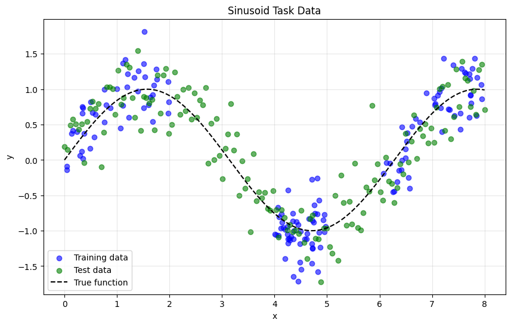
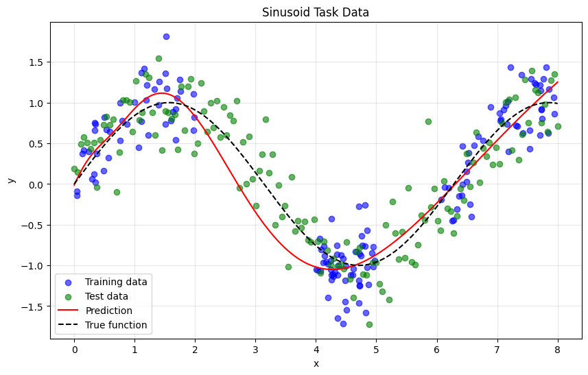
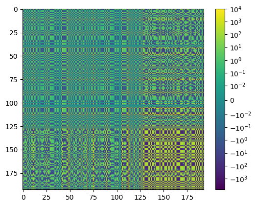
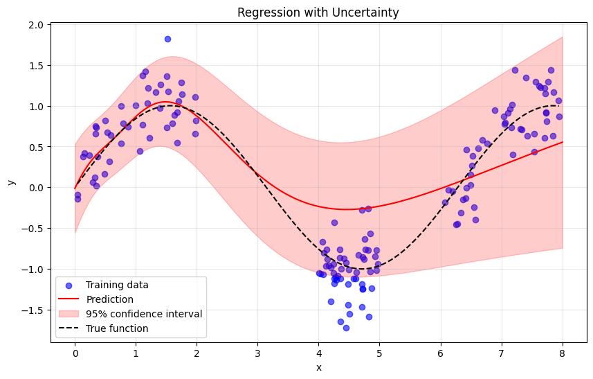
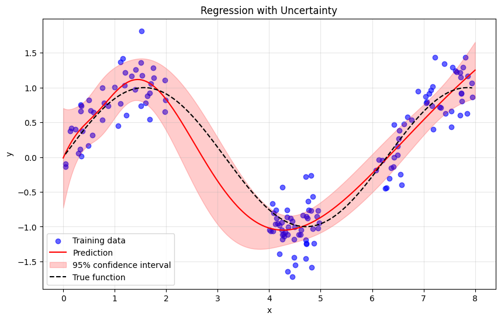
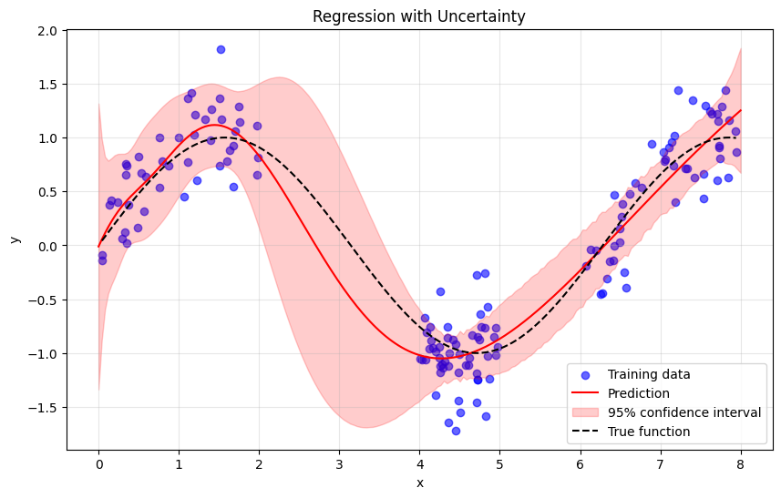
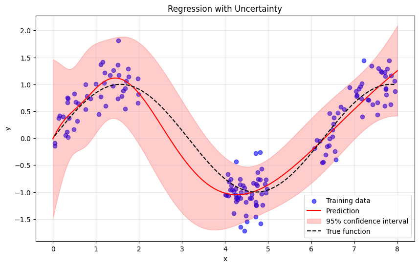

Introduction to laplax for regression tasks¶
This tutorial follows the laplace-torch regression tutorial and provides a quick
overview of the different functionalities which are currently supported by laplax.
For the dataset we consider sinus as our target with additional observation noise \(\sigma^2 = 0.3\). To make the task harder, we only consider training and validation data on a few subintervals.
from functools import partial
import ipywidgets as widgets
import jax
import jax.numpy as jnp
import matplotlib.pyplot as plt
import numpy as np
import optax
import torch
from flax import nnx
from helper import DataLoader, get_sinusoid_example
from IPython.display import display
from matplotlib.colors import SymLogNorm
from plotting import plot_regression_with_uncertainty, plot_sinusoid_task, print_results
from skerch import linops
from skerch.decompositions import seigh
from tqdm.auto import tqdm
from laplax.curv import create_ggn_mv, create_posterior_fn, estimate_curvature
from laplax.curv.cov import set_posterior_fn
from laplax.curv.utils import LowRankTerms, get_matvec
from laplax.eval import evaluate_for_given_prior_arguments, marginal_log_likelihood
from laplax.eval.calibrate import optimize_prior_prec
from laplax.eval.metrics import (
DEFAULT_REGRESSION_METRICS,
chi_squared_zero,
nll_gaussian,
)
from laplax.eval.pushforward import (
lin_pred_mean,
lin_pred_std,
lin_pred_var,
lin_setup,
nonlin_pred_mean,
nonlin_pred_std,
nonlin_pred_var,
nonlin_setup,
set_lin_pushforward,
set_nonlin_pushforward,
set_posterior_gp_kernel,
)
from laplax.eval.utils import evaluate_metrics_on_dataset
from laplax.register import register_curvature_method
from laplax.types import DType
from laplax.util.flatten import flatten_function
from laplax.util.loader import input_target_split
from laplax.util.mv import to_dense
from laplax.util.tree import get_size
n_epochs = 1000
key = jax.random.key(0)
# Sample toy data example
num_training_samples = 150
num_calibration_samples = 50
num_test_samples = 150
batch_size = 20
X_train, y_train, X_valid, y_valid, X_test, y_test = get_sinusoid_example(
num_train_data=num_training_samples,
num_valid_data=num_calibration_samples,
num_test_data=num_test_samples,
sigma_noise=0.3,
intervals=[(0, 2), (4, 5), (6, 8)],
rng_key=jax.random.key(0),
)
train_loader = DataLoader(X_train, y_train, batch_size)
fig = plot_sinusoid_task(X_train, y_train, X_test, y_test)

Training for the MAP¶
In this tutorial, we use flax.nnx for setting up neural networks in jax, but
other libraries (e.g., equinox or flax.linen) should also work out of the box
since we will only require a split into model_fn and params for laplax, which
all of them provide.
From a Bayesian perspective supervised learning can be seen as finding the maximum-a-posteriori estimate of the joint log likelihood:
where: - \(f\) is the neural network, - \(\theta \in \mathbb{R}^{P}\) its parameters, and - \(\mathcal{D} := \{(x_n, y_n)\}_{n=1}^{N}\) the labelled dataset.
# Create and train MAP model
class Model(nnx.Module):
def __init__(self, in_channels, hidden_channels, out_channels, rngs):
self.linear1 = nnx.Linear(in_channels, hidden_channels, rngs=rngs)
self.linear2 = nnx.Linear(hidden_channels, out_channels, rngs=rngs)
def __call__(self, x):
x = self.linear2(nnx.tanh(self.linear1(x)))
return x
@nnx.jit
def train_step(model, optimizer, x, y):
def loss_fn(model):
y_pred = model(x) # Call methods directly
return jnp.sum((y_pred - y) ** 2)
loss, grads = nnx.value_and_grad(loss_fn)(model)
optimizer.update(grads) # Inplace updates
return loss
def train_model(model, n_epochs, lr=1e-3):
# Create optimizer
optimizer = nnx.Optimizer(model, optax.adamw(lr)) # Reference sharing
# Train epoch
for epoch in range(n_epochs):
for x_tr, y_tr in train_loader:
loss = train_step(model, optimizer, x_tr, y_tr)
if epoch % 100 == 0:
print(f"[epoch {epoch}]: loss: {loss:.4f}")
print(f"Final loss: {loss:.4f}")
return model
# Initialize model
model = Model(in_channels=1, hidden_channels=64, out_channels=1, rngs=nnx.Rngs(0))
# Train model
model = train_model(model, n_epochs=1000)
X_pred = jnp.linspace(0.0, 8.0, 200).reshape(200, 1)
y_pred = jax.vmap(model)(X_pred)
_ = plot_sinusoid_task(X_train, y_train, X_test, y_test, X_pred, y_pred)
[epoch 0]: loss: 6.2626
[epoch 100]: loss: 4.2591
[epoch 200]: loss: 1.3689
[epoch 300]: loss: 1.5673
[epoch 400]: loss: 0.3712
[epoch 500]: loss: 0.6099
[epoch 600]: loss: 1.7761
[epoch 700]: loss: 0.5140
[epoch 800]: loss: 0.5963
[epoch 900]: loss: 0.6607
Final loss: 0.8118

Estimating the curvature¶
We are now interested in finding a normal distribution that describes the uncertainty in the weight space with respect to the loss and the data: $$ p(\theta \vert \mathcal{D}) = \frac{p(\mathcal{D}, \theta)}{p(\mathcal{D})} = \frac {p(\mathcal{D} \vert \theta) p(\theta)}{\int p(\mathcal{D} \vert \theta) p(\theta) d\theta}. $$
Our tool of choice is the Laplace approximation --- motivated via a second-order Taylor expansion, where the first-order term disappears due to the assumption of having reached a local minimum of the loss. Following these steps we get the following normal distribution approximating the true posterior: $$ \theta \sim \mathcal{N}(\theta_{\text{MAP}}, [\nabla^2_{\theta\theta} \log p (\theta \vert \mathcal{D}) \vert_{\theta = \theta_{\text{MAP}}} ]^{-1}). $$
We usually assume the prior to be an isotropic Gaussian distribution, hence the expensive part remains mainly the loss hessian. Due to various reasons (positive definiteness or/and a linearized perspective of the neural network) we usually consider instead of the true Hessian the so-called Generalized-Gauss Newton matrix:
We start by splitting the flax.nnx model into model_fn and params.
Important The signature of the model_fn needs to be input and params, since
we strongly depend on the key word arguments in laplax.
# Create GGN
graph_def, params = nnx.split(model)
def model_fn(input, params):
return nnx.call((graph_def, params))(input)[0]
train_batch = {"input": X_train, "target": y_train}
ggn_mv = create_ggn_mv(
model_fn,
params,
train_batch,
loss_fn="mse",
)
In this small toy example, we can dense the curvature matrix-vector product. We start by wrapping the matrix-vector product to accept normal 1D vectors of size \(P\). This will help us visualize the GGN.
ggn_mv_wrapped = flatten_function(ggn_mv, layout=params)
arr = to_dense(ggn_mv_wrapped, layout=get_size(params))
plt.imshow(arr, norm=SymLogNorm(linthresh=1e-2, linscale=1))
plt.colorbar()
plt.show()

Curvature estimators¶
In practice, we can not afford to dense and continue computations with the GGN.
Therefore, various strategies for estimating the curvature exist. Within this package
we have: full (obvious), diagonal and low_rank. For the latter, we support
finding the low rank representation using lanczos or lobpcg.
# Create dropdown for library selection.
lib_dropdown = widgets.Dropdown(
options=["full", "diagonal", "lanczos", "lobpcg"],
value="full",
description="Curv. est.:",
)
display(lib_dropdown)
Dropdown(description='Curv. est.:', options=('full', 'diagonal', 'lanczos', 'lobpcg'), value='full')
print(f"Curvature will be estimated using a {lib_dropdown.value} approximation.")
curv_type = lib_dropdown.value
low_rank_args = {
"key": jax.random.key(20),
"rank": 50,
"mv_jit": True,
}
curv_args = {} if curv_type in {"full", "diagonal"} else low_rank_args
curv_estimate = estimate_curvature(
curv_type=curv_type,
mv=ggn_mv,
layout=params,
**curv_args,
)
Curvature will be estimated using a full approximation.
Create a posterior_fn¶
We can now create a posterior_fn that takes prior_arguments and returns a
posterior distribution over the weights. This includes adding the prior precision
\(\tau\) and inverting the combined expression in a memory-efficient way:
$$ \text{posterior_fn}(\tau) = \big( GGN + \tau I_{P\times P} \big)^{-1} $$
If we have already an estimation of the curvature, then we can directly set the
posterior function using the estimate. Otherwise both functions can also be executed
at once using the laplax.curv.create_posterior_fn.
posterior_fn = set_posterior_fn(curv_type, curv_estimate, layout=params)
# # Alternatively, we can create the posterior function from scratch, if no curvature
# # estimation is available.
# # Create Posterior
# posterior_fn = create_posterior_fn(
# curv_type=curv_type,
# mv=ggn_mv,
# layout=params,
# **curv_args,
# )
How to pushforward the weight space uncertainty?¶
There are two ideas for pushing forward weight space uncertainty.
-
Sample-based pushforward via the neural network $$ f(x_n, \theta_s), \quad \theta_s \sim \mathcal{N}\bigg(\theta_{MAP}, \Sigma\bigg)$$
-
Linearized pushforward $$ f(x_n, \theta) \sim \mathcal{N}\bigg(f(x_n, \theta_{MAP}), \mathcal{J}{\theta}(f (x_n, \theta{\text{MAP}}))\Sigma \mathcal{J}{\theta}(f(x_n, \theta{\text{MAP}})) ^\top\bigg)$$
Recommendation: Play around with the prior precision to see its strong modeling impact. Also check out larger intervals to see the uncertainty structure outside of the training domain.
Sample-based pushforward via the neural network¶
# Setup linearized pushforward
set_nonlin_prob_predictive = partial(
set_nonlin_pushforward,
model_fn=model_fn,
mean_params=params,
posterior_fn=posterior_fn,
pushforward_fns=[nonlin_setup, nonlin_pred_mean, nonlin_pred_var, nonlin_pred_std],
key=jax.random.key(42),
num_samples=10000,
)
prior_arguments = {"prior_prec": 40.0} # Choose any prior precision.
prob_predictive = set_nonlin_prob_predictive(
prior_arguments=prior_arguments,
)
X_pred = jnp.linspace(0, 8, 200).reshape(200, 1)
pred = jax.vmap(prob_predictive)(X_pred)
_ = plot_regression_with_uncertainty(
X_train=train_batch["input"],
y_train=train_batch["target"],
X_pred=X_pred,
y_pred=pred["pred_mean"][:, 0],
y_std=jnp.sqrt(pred["pred_var"][:, 0]),
)

Linearized pushforward¶
# Setup linearized pushforward
set_prob_predictive = partial(
set_lin_pushforward,
model_fn=model_fn,
mean_params=params,
posterior_fn=posterior_fn,
pushforward_fns=[
lin_setup,
lin_pred_mean,
lin_pred_var,
lin_pred_std,
],
)
prior_arguments = {"prior_prec": 1.0} # Choose any prior precision.
prob_predictive = set_prob_predictive(
prior_arguments=prior_arguments,
)
X_pred = jnp.linspace(0, 8, 200).reshape(200, 1)
pred = jax.vmap(prob_predictive)(X_pred)
_ = plot_regression_with_uncertainty(
X_train=train_batch["input"],
y_train=train_batch["target"],
X_pred=X_pred,
y_pred=pred["pred_mean"][:, 0],
y_std=jnp.sqrt(pred["pred_var"][:, 0]),
)

Calibration¶
When playing around we see that it is non-trivial of how to choose the prior \ precision. To do so with an heuristic we need to optimize some objective. There are two common strategies: either optimize for a downstream metric (e.g. Negative-Log Likelihood or average calibration (\(\chi^2\))) or target the marginal log-likelihood. Later is a common objective for even more general model selection (see below) and is given by:
where \(\mathrm{H}_{\theta_*}\) is the posterior precision and \(\mathcal{M}\) other model parameters, such as the network architecture. We note that no inversion is needed compute the marginal log likelihood when updating the prior arguments. However, in practice optimizing for downstream metrics will also lead to better downstream metrics.
For optimization we can choose either grid search or gradient descent.
Partially initializing set_prob_predictive¶
We always start by partially initializing the set_prob_predictive, such that it
only misses the prior_arguments, which we will use for optimizing a chosen
objective.
set_prob_predictive = partial(
set_lin_pushforward,
model_fn=model_fn,
mean_params=params,
posterior_fn=posterior_fn,
pushforward_fns=[
lin_setup,
lin_pred_mean,
lin_pred_std,
],
)
# Set a batch of calibration data
clbr_batch = {"input": X_valid, "target": y_valid}
Select calibration objective¶
# Create dropdown for library selection.
clbr_obj_dropdown = widgets.Dropdown(
options=["nll", "chi_squared", "marginal log-likelihood"],
value="nll",
description="Objective:",
)
display(clbr_obj_dropdown)
Dropdown(description='Objective:', options=('nll', 'chi_squared', 'marginal log-likelihood'), value='nll')
@jax.jit
def nll_objective(prior_arguments, batch):
return evaluate_for_given_prior_arguments(
prior_arguments=prior_arguments,
data=batch,
set_prob_predictive=set_prob_predictive,
metric=nll_gaussian,
)
@jax.jit
def chi_squared_objective(prior_arguments, batch):
return evaluate_for_given_prior_arguments(
prior_arguments=prior_arguments,
data=batch,
set_prob_predictive=set_prob_predictive,
metric=chi_squared_zero,
# This is chi_squared tansformed to have its optimal value at zero.
)
@jax.jit
def marginal_log_likelihood_objective(prior_arguments, batch):
return -marginal_log_likelihood(
curv_estimate,
prior_arguments=prior_arguments,
data=batch,
model_fn=model_fn,
params=params,
loss_fn="mse",
curv_type=curv_type,
)
# Select objective based on dropdown menu
objective = {
"nll": nll_objective,
"chi_squared": chi_squared_objective,
"marginal log-likelihood": marginal_log_likelihood_objective,
}[clbr_obj_dropdown.value]
Grid search¶
prior_prec = optimize_prior_prec(
objective=partial(objective, batch=clbr_batch),
log_prior_prec_min=-3.0,
log_prior_prec_max=3.0,
grid_size=50,
)
print("Calibrated prior precision: ", prior_prec)
[32m2025-11-18 16:19:40.070[0m | [1mINFO [0m | [36mlaplax.eval.calibrate[0m:[36mgrid_search[0m:[36m106[0m - [1mCaught nan, setting result to inf.[0m
[32m2025-11-18 16:19:40.071[0m | [1mINFO [0m | [36mlaplax.eval.calibrate[0m:[36mgrid_search[0m:[36m110[0m - [1mTook 0.1630 seconds, prior prec: 0.0010, result: inf[0m
[32m2025-11-18 16:19:40.074[0m | [1mINFO [0m | [36mlaplax.eval.calibrate[0m:[36mgrid_search[0m:[36m106[0m - [1mCaught nan, setting result to inf.[0m
[32m2025-11-18 16:19:40.075[0m | [1mINFO [0m | [36mlaplax.eval.calibrate[0m:[36mgrid_search[0m:[36m110[0m - [1mTook 0.0037 seconds, prior prec: 0.0013, result: inf[0m
[32m2025-11-18 16:19:40.077[0m | [1mINFO [0m | [36mlaplax.eval.calibrate[0m:[36mgrid_search[0m:[36m106[0m - [1mCaught nan, setting result to inf.[0m
[32m2025-11-18 16:19:40.078[0m | [1mINFO [0m | [36mlaplax.eval.calibrate[0m:[36mgrid_search[0m:[36m110[0m - [1mTook 0.0021 seconds, prior prec: 0.0018, result: inf[0m
[32m2025-11-18 16:19:40.080[0m | [1mINFO [0m | [36mlaplax.eval.calibrate[0m:[36mgrid_search[0m:[36m106[0m - [1mCaught nan, setting result to inf.[0m
[32m2025-11-18 16:19:40.081[0m | [1mINFO [0m | [36mlaplax.eval.calibrate[0m:[36mgrid_search[0m:[36m110[0m - [1mTook 0.0016 seconds, prior prec: 0.0023, result: inf[0m
[32m2025-11-18 16:19:40.084[0m | [1mINFO [0m | [36mlaplax.eval.calibrate[0m:[36mgrid_search[0m:[36m106[0m - [1mCaught nan, setting result to inf.[0m
[32m2025-11-18 16:19:40.084[0m | [1mINFO [0m | [36mlaplax.eval.calibrate[0m:[36mgrid_search[0m:[36m110[0m - [1mTook 0.0016 seconds, prior prec: 0.0031, result: inf[0m
[32m2025-11-18 16:19:40.087[0m | [1mINFO [0m | [36mlaplax.eval.calibrate[0m:[36mgrid_search[0m:[36m110[0m - [1mTook 0.0014 seconds, prior prec: 0.0041, result: 0.589194[0m
[32m2025-11-18 16:19:40.089[0m | [1mINFO [0m | [36mlaplax.eval.calibrate[0m:[36mgrid_search[0m:[36m110[0m - [1mTook 0.0018 seconds, prior prec: 0.0054, result: 0.692883[0m
[32m2025-11-18 16:19:40.091[0m | [1mINFO [0m | [36mlaplax.eval.calibrate[0m:[36mgrid_search[0m:[36m110[0m - [1mTook 0.0014 seconds, prior prec: 0.0072, result: 0.692233[0m
[32m2025-11-18 16:19:40.094[0m | [1mINFO [0m | [36mlaplax.eval.calibrate[0m:[36mgrid_search[0m:[36m110[0m - [1mTook 0.0020 seconds, prior prec: 0.0095, result: 0.695813[0m
[32m2025-11-18 16:19:40.096[0m | [1mINFO [0m | [36mlaplax.eval.calibrate[0m:[36mgrid_search[0m:[36m110[0m - [1mTook 0.0019 seconds, prior prec: 0.0126, result: 0.698771[0m
[32m2025-11-18 16:19:40.098[0m | [1mINFO [0m | [36mlaplax.eval.calibrate[0m:[36mgrid_search[0m:[36m110[0m - [1mTook 0.0019 seconds, prior prec: 0.0168, result: 0.719765[0m
[32m2025-11-18 16:19:40.101[0m | [1mINFO [0m | [36mlaplax.eval.calibrate[0m:[36mgrid_search[0m:[36m110[0m - [1mTook 0.0012 seconds, prior prec: 0.0222, result: 0.725796[0m
[32m2025-11-18 16:19:40.102[0m | [1mINFO [0m | [36mlaplax.eval.calibrate[0m:[36mgrid_search[0m:[36m110[0m - [1mTook 0.0014 seconds, prior prec: 0.0295, result: 0.748759[0m
[32m2025-11-18 16:19:40.105[0m | [1mINFO [0m | [36mlaplax.eval.calibrate[0m:[36mgrid_search[0m:[36m110[0m - [1mTook 0.0016 seconds, prior prec: 0.0391, result: 0.761235[0m
[32m2025-11-18 16:19:40.107[0m | [1mINFO [0m | [36mlaplax.eval.calibrate[0m:[36mgrid_search[0m:[36m110[0m - [1mTook 0.0017 seconds, prior prec: 0.0518, result: 0.777536[0m
[32m2025-11-18 16:19:40.109[0m | [1mINFO [0m | [36mlaplax.eval.calibrate[0m:[36mgrid_search[0m:[36m110[0m - [1mTook 0.0018 seconds, prior prec: 0.0687, result: 0.793358[0m
[32m2025-11-18 16:19:40.112[0m | [1mINFO [0m | [36mlaplax.eval.calibrate[0m:[36mgrid_search[0m:[36m110[0m - [1mTook 0.0017 seconds, prior prec: 0.0910, result: 0.814793[0m
[32m2025-11-18 16:19:40.114[0m | [1mINFO [0m | [36mlaplax.eval.calibrate[0m:[36mgrid_search[0m:[36m110[0m - [1mTook 0.0018 seconds, prior prec: 0.1207, result: 0.825115[0m
[32m2025-11-18 16:19:40.116[0m | [1mINFO [0m | [36mlaplax.eval.calibrate[0m:[36mgrid_search[0m:[36m110[0m - [1mTook 0.0009 seconds, prior prec: 0.1600, result: 0.851190[0m
[32m2025-11-18 16:19:40.117[0m | [1mINFO [0m | [36mlaplax.eval.calibrate[0m:[36mgrid_search[0m:[36m110[0m - [1mTook 0.0014 seconds, prior prec: 0.2121, result: 0.873288[0m
[32m2025-11-18 16:19:40.119[0m | [1mINFO [0m | [36mlaplax.eval.calibrate[0m:[36mgrid_search[0m:[36m110[0m - [1mTook 0.0009 seconds, prior prec: 0.2812, result: 0.899353[0m
[32m2025-11-18 16:19:40.121[0m | [1mINFO [0m | [36mlaplax.eval.calibrate[0m:[36mgrid_search[0m:[36m110[0m - [1mTook 0.0015 seconds, prior prec: 0.3728, result: 0.925958[0m
[32m2025-11-18 16:19:40.123[0m | [1mINFO [0m | [36mlaplax.eval.calibrate[0m:[36mgrid_search[0m:[36m110[0m - [1mTook 0.0016 seconds, prior prec: 0.4942, result: 0.956281[0m
[32m2025-11-18 16:19:40.126[0m | [1mINFO [0m | [36mlaplax.eval.calibrate[0m:[36mgrid_search[0m:[36m110[0m - [1mTook 0.0013 seconds, prior prec: 0.6551, result: 0.985040[0m
[32m2025-11-18 16:19:40.128[0m | [1mINFO [0m | [36mlaplax.eval.calibrate[0m:[36mgrid_search[0m:[36m110[0m - [1mTook 0.0009 seconds, prior prec: 0.8685, result: 1.018489[0m
[32m2025-11-18 16:19:40.130[0m | [1mINFO [0m | [36mlaplax.eval.calibrate[0m:[36mgrid_search[0m:[36m110[0m - [1mTook 0.0015 seconds, prior prec: 1.1514, result: 1.050153[0m
[32m2025-11-18 16:19:40.132[0m | [1mINFO [0m | [36mlaplax.eval.calibrate[0m:[36mgrid_search[0m:[36m110[0m - [1mTook 0.0016 seconds, prior prec: 1.5264, result: 1.084453[0m
[32m2025-11-18 16:19:40.133[0m | [1mINFO [0m | [36mlaplax.eval.calibrate[0m:[36mgrid_search[0m:[36m110[0m - [1mTook 0.0012 seconds, prior prec: 2.0236, result: 1.120389[0m
[32m2025-11-18 16:19:40.135[0m | [1mINFO [0m | [36mlaplax.eval.calibrate[0m:[36mgrid_search[0m:[36m110[0m - [1mTook 0.0015 seconds, prior prec: 2.6827, result: 1.159454[0m
[32m2025-11-18 16:19:40.137[0m | [1mINFO [0m | [36mlaplax.eval.calibrate[0m:[36mgrid_search[0m:[36m110[0m - [1mTook 0.0013 seconds, prior prec: 3.5565, result: 1.201323[0m
[32m2025-11-18 16:19:40.139[0m | [1mINFO [0m | [36mlaplax.eval.calibrate[0m:[36mgrid_search[0m:[36m110[0m - [1mTook 0.0016 seconds, prior prec: 4.7149, result: 1.247882[0m
[32m2025-11-18 16:19:40.141[0m | [1mINFO [0m | [36mlaplax.eval.calibrate[0m:[36mgrid_search[0m:[36m110[0m - [1mTook 0.0014 seconds, prior prec: 6.2506, result: 1.299314[0m
[32m2025-11-18 16:19:40.143[0m | [1mINFO [0m | [36mlaplax.eval.calibrate[0m:[36mgrid_search[0m:[36m110[0m - [1mTook 0.0014 seconds, prior prec: 8.2864, result: 1.355583[0m
[32m2025-11-18 16:19:40.145[0m | [1mINFO [0m | [36mlaplax.eval.calibrate[0m:[36mgrid_search[0m:[36m110[0m - [1mTook 0.0016 seconds, prior prec: 10.9854, result: 1.417005[0m
[32m2025-11-18 16:19:40.146[0m | [1mINFO [0m | [36mlaplax.eval.calibrate[0m:[36mgrid_search[0m:[36m110[0m - [1mTook 0.0013 seconds, prior prec: 14.5635, result: 1.483379[0m
[32m2025-11-18 16:19:40.148[0m | [1mINFO [0m | [36mlaplax.eval.calibrate[0m:[36mgrid_search[0m:[36m110[0m - [1mTook 0.0010 seconds, prior prec: 19.3070, result: 1.554855[0m
[32m2025-11-18 16:19:40.150[0m | [1mINFO [0m | [36mlaplax.eval.calibrate[0m:[36mgrid_search[0m:[36m110[0m - [1mTook 0.0019 seconds, prior prec: 25.5955, result: 1.631271[0m
[32m2025-11-18 16:19:40.152[0m | [1mINFO [0m | [36mlaplax.eval.calibrate[0m:[36mgrid_search[0m:[36m110[0m - [1mTook 0.0014 seconds, prior prec: 33.9322, result: 1.713325[0m
[32m2025-11-18 16:19:40.154[0m | [1mINFO [0m | [36mlaplax.eval.calibrate[0m:[36mgrid_search[0m:[36m110[0m - [1mTook 0.0011 seconds, prior prec: 44.9843, result: 1.801812[0m
[32m2025-11-18 16:19:40.155[0m | [1mINFO [0m | [36mlaplax.eval.calibrate[0m:[36mgrid_search[0m:[36m110[0m - [1mTook 0.0012 seconds, prior prec: 59.6362, result: 1.897861[0m
[32m2025-11-18 16:19:40.157[0m | [1mINFO [0m | [36mlaplax.eval.calibrate[0m:[36mgrid_search[0m:[36m110[0m - [1mTook 0.0013 seconds, prior prec: 79.0604, result: 2.003031[0m
[32m2025-11-18 16:19:40.159[0m | [1mINFO [0m | [36mlaplax.eval.calibrate[0m:[36mgrid_search[0m:[36m110[0m - [1mTook 0.0015 seconds, prior prec: 104.8113, result: 2.118735[0m
[32m2025-11-18 16:19:40.161[0m | [1mINFO [0m | [36mlaplax.eval.calibrate[0m:[36mgrid_search[0m:[36m110[0m - [1mTook 0.0016 seconds, prior prec: 138.9495, result: 2.246382[0m
[32m2025-11-18 16:19:40.163[0m | [1mINFO [0m | [36mlaplax.eval.calibrate[0m:[36mgrid_search[0m:[36m110[0m - [1mTook 0.0011 seconds, prior prec: 184.2069, result: 2.387300[0m
[32m2025-11-18 16:19:40.165[0m | [1mINFO [0m | [36mlaplax.eval.calibrate[0m:[36mgrid_search[0m:[36m110[0m - [1mTook 0.0012 seconds, prior prec: 244.2053, result: 2.543013[0m
[32m2025-11-18 16:19:40.167[0m | [1mINFO [0m | [36mlaplax.eval.calibrate[0m:[36mgrid_search[0m:[36m110[0m - [1mTook 0.0011 seconds, prior prec: 323.7458, result: 2.715356[0m
[32m2025-11-18 16:19:40.169[0m | [1mINFO [0m | [36mlaplax.eval.calibrate[0m:[36mgrid_search[0m:[36m110[0m - [1mTook 0.0011 seconds, prior prec: 429.1934, result: 2.906862[0m
[32m2025-11-18 16:19:40.172[0m | [1mINFO [0m | [36mlaplax.eval.calibrate[0m:[36mgrid_search[0m:[36m110[0m - [1mTook 0.0017 seconds, prior prec: 568.9865, result: 3.121205[0m
[32m2025-11-18 16:19:40.174[0m | [1mINFO [0m | [36mlaplax.eval.calibrate[0m:[36mgrid_search[0m:[36m110[0m - [1mTook 0.0017 seconds, prior prec: 754.3121, result: 3.363734[0m
[32m2025-11-18 16:19:40.176[0m | [1mINFO [0m | [36mlaplax.eval.calibrate[0m:[36mgrid_search[0m:[36m110[0m - [1mTook 0.0018 seconds, prior prec: 1000.0000, result: 3.642258[0m
[32m2025-11-18 16:19:40.177[0m | [1mINFO [0m | [36mlaplax.eval.calibrate[0m:[36mgrid_search[0m:[36m139[0m - [1mChosen prior prec = 0.0041[0m
Calibrated prior precision: 0.0040949145
We can use a similar pipeline to evaluate an arbitrary set of metrics. A few common \
regression metrics are natively supported in laplax.
# Set test batch
test_batch = {"input": X_test, "target": y_test}
prob_predictive = set_prob_predictive(prior_arguments={"prior_prec": prior_prec})
results = evaluate_metrics_on_dataset(
pred_fn=prob_predictive,
data=test_batch,
metrics=DEFAULT_REGRESSION_METRICS,
reduce=jnp.mean, # How to aggregate metrics over batch.
)
# Print metrics
print_results(results, "Model Evaluation Metrics")
# Predict for plot
X_pred = jnp.linspace(0, 8, 200).reshape(200, 1)
pred = jax.vmap(prob_predictive)(X_pred)
_ = plot_regression_with_uncertainty(
X_train=train_batch["input"],
y_train=train_batch["target"],
X_pred=X_pred,
y_pred=pred["pred_mean"][:, 0],
y_std=jnp.sqrt(pred["pred_var"][:, 0]),
)
Model Evaluation Metrics
----------------------------------------
chi^2 : 3.170391
crps : 0.233743
nll : 1.017358
rmse : 0.325561

Gradient descent¶
A major benefit from the gradient descent objective is that we can straightforwardly
extend the calibration to other hyperparameters. So far, we were just able to
calibrate the prior precision, which will not account properly for the additional
observation noise in our regression task. To change this, we will introduce the
so-called sigma_squared term in our objective, which will support us in modeling
the model uncertainty as well. The marginal log-likelihood for the mean squared error
loss is then given by:
# Initialize prior arguments
prior_arguments = {"prior_prec": jnp.array(1.0), "sigma_squared": jnp.array(0.1)}
# Set parameters
num_clbr_epochs = 100
lr = 1e-3
# Set optimizer
optimizer = optax.adam(lr)
opt_state = optimizer.init(prior_arguments)
valid_loader = DataLoader(X_valid, y_valid, batch_size=16)
# Transform prior arguments, so we can optimize over all reals
prior_arguments = jax.tree.map(jnp.log, prior_arguments)
# Optimize prior arguments
with tqdm(total=num_clbr_epochs, desc="Training") as pbar:
for _ in range(num_clbr_epochs):
epoch_vals = []
for batch in valid_loader:
val, grads = jax.value_and_grad(
lambda p: objective(
jax.tree.map(jnp.exp, p),
input_target_split(batch), # noqa: B023
)
)(prior_arguments)
# Update the parameters using the optimizer
updates, opt_state = optimizer.update(grads, opt_state)
prior_arguments = optax.apply_updates(prior_arguments, updates)
epoch_vals.append(val)
avg_val = sum(epoch_vals) / len(epoch_vals)
pbar.set_postfix({"objective": f"{avg_val:.4f}"})
pbar.update(1)
# Transform prior arguments back
prior_arguments = jax.tree.map(jnp.exp, prior_arguments)
print("Final values:", dict(prior_arguments))
Training: 0%| | 0/100 [00:00<?, ?it/s]
Final values: {'prior_prec': Array(1.3951623, dtype=float32), 'sigma_squared': Array(0.13577305, dtype=float32)}
prob_predictive = set_prob_predictive(prior_arguments=prior_arguments)
results = evaluate_metrics_on_dataset(
pred_fn=prob_predictive,
data=test_batch,
metrics=DEFAULT_REGRESSION_METRICS,
reduce=jnp.mean, # How to aggregate metrics over batch.
)
# Print metrics
print_results(results, "Model Evaluation Metrics")
# Predict for plot
X_pred = jnp.linspace(0, 8, 200).reshape(200, 1)
pred = jax.vmap(prob_predictive)(X_pred)
_ = plot_regression_with_uncertainty(
X_train=train_batch["input"],
y_train=train_batch["target"],
X_pred=X_pred,
y_pred=pred["pred_mean"][:, 0],
y_std=jnp.sqrt(pred["pred_var"][:, 0]),
)
Model Evaluation Metrics
----------------------------------------
chi^2 : 1.203062
crps : 0.224622
nll : 0.497671
rmse : 0.325561
Bonus: Registering skerch¶
Let us get to some bonus content. One benefit of laplax is its modularity, which
should make it easy to extend or bend its use cases. For example, we can easily
register our favorite curvature approximation method: skerch; even though it was
written for torch. To make it available for creating a posterior function based on
its curvature structure, we can either implement (+register) all methods or refer to
a default method, which might already exist in laplax.
class JAXMV(linops.TorchLinOpWrapper):
def __init__(self, matvec, shape):
self.shape = shape
self.matvec = matvec
def __matmul__(self, x):
x_dtype = x.dtype
x = jnp.asarray(x.detach().cpu().numpy())
x = self.matvec(x)
return torch.tensor(np.asarray(x), dtype=x_dtype)
def __rmatmul__(self, x):
return self.__matmul__(x.T)
def skerch_low_rank(
A,
*,
layout=None,
rank: int = 100,
return_dtype: DType = jnp.float64,
mv_jittable=True,
**kwargs,
):
del kwargs
# Setup mv product.
matvec, size = get_matvec(A, layout=layout, jit=mv_jittable)
op = JAXMV(matvec, (size, size))
res = seigh(
op, op_device="cpu", op_dtype=torch.float64, outer_dim=rank, inner_dim=rank
)
low_rank_result = LowRankTerms(
U=jnp.asarray((res[0] @ res[1]).detach().cpu()),
S=jnp.asarray(res[2].detach().cpu().numpy()),
scalar=jnp.asarray(0.0, dtype=return_dtype),
)
return low_rank_result
register_curvature_method(
name="skerch", create_curvature_fn=skerch_low_rank, default="lanczos"
)
posterior_fn = create_posterior_fn(
curv_type="skerch",
mv=ggn_mv,
layout=params,
key=jax.random.key(20),
rank=50,
mv_jit=True,
)
/tmp/ipykernel_4980/1416079365.py:37: UserWarning: Explicitly requested dtype <class 'jax.numpy.float64'> requested in asarray is not available, and will be truncated to dtype float32. To enable more dtypes, set the jax_enable_x64 configuration option or the JAX_ENABLE_X64 shell environment variable. See https://github.com/jax-ml/jax#current-gotchas for more.
scalar=jnp.asarray(0.0, dtype=return_dtype),
Bonus: Posterior GP kernel¶
We can now use the posterior function to create a Laplace (GP) kernel to also model covariances between various inputs. While the default only takes a single input, we can use standard vectorization techniques to apply it to multiple inputs at the same time.
gp_kernel, dist_state = set_posterior_gp_kernel(
model_fn=model_fn,
mean=params,
posterior_fn=posterior_fn,
prior_arguments=prior_arguments,
dense=True, # If dense = False, then a slower kernel-vector product is returned.
output_layout=1,
)
def vectorized_laplace_kernel(a, b):
return jnp.vectorize(gp_kernel, signature="(d),(d)->(j,j)")(a, b)[..., 0]
X_pred = jnp.linspace(0.0, 8.0, 200).reshape(200, 1)
Y_pred = model_fn(X_pred, params)[:, 0]
Y_var = vectorized_laplace_kernel(X_pred, X_pred)
_ = plot_regression_with_uncertainty(
X_train=train_batch["input"],
y_train=train_batch["target"],
X_pred=X_pred[:, 0],
y_pred=Y_pred,
y_std=jnp.sqrt(Y_var)[:, 0],
)

OK, in this little example this is not so much of an advantage. However, for more complex models/datasets this can be a huge support for downstream tasks.
Bonus: Model selection¶
class ModelOverfit(nnx.Module):
def __init__(self, rngs):
self.linear1 = nnx.Linear(1, 25, rngs=rngs)
self.linear2 = nnx.Linear(25, 50, rngs=rngs)
self.linear3 = nnx.Linear(50, 25, rngs=rngs)
self.linear4 = nnx.Linear(25, 1, rngs=rngs)
def __call__(self, x):
x = nnx.tanh(self.linear1(x))
x = nnx.tanh(self.linear2(x))
x = nnx.tanh(self.linear3(x))
x = nnx.tanh(self.linear4(x))
return x
class FullOverfit(nnx.Module):
def __init__(self, rngs):
self.linear1 = nnx.Linear(1, 25, rngs=rngs)
self.linear2 = nnx.Linear(25, 50, rngs=rngs)
self.linear3 = nnx.Linear(50, 25, rngs=rngs)
self.linear4 = nnx.Linear(25, 50, rngs=rngs)
self.linear5 = nnx.Linear(50, 25, rngs=rngs)
self.linear6 = nnx.Linear(25, 50, rngs=rngs)
self.linear7 = nnx.Linear(50, 25, rngs=rngs)
self.linear8 = nnx.Linear(25, 1, rngs=rngs)
def __call__(self, x):
x = nnx.tanh(self.linear1(x))
x = nnx.tanh(self.linear2(x))
x = nnx.tanh(self.linear3(x))
x = nnx.tanh(self.linear4(x))
x = nnx.tanh(self.linear5(x))
x = nnx.tanh(self.linear6(x))
x = nnx.tanh(self.linear7(x))
x = nnx.tanh(self.linear8(x))
return x
n_epochs = 1000
lr = 1e-3
rngs = nnx.Rngs(0)
models = [
(Model(1, 2, 1, rngs=rngs), 1000, 1e-3, "1-2-1"),
(Model(1, 50, 1, rngs=rngs), 1000, 1e-3, "1-50-1"),
(Model(1, 600, 1, rngs=rngs), 1000, 1e-3, "1-600-1"),
(ModelOverfit(rngs=rngs), n_epochs, 1e-3, "1-25-50-25-1"),
(FullOverfit(rngs=rngs), n_epochs, 1e-3, "1-25-50-25-50-25-50-25-1"),
]
trained_models = []
for model, num_epoch, lr, name in models:
print(f"Model {name}")
model.name = name
trained_models.append(train_model(model, num_epoch, lr))
print("-" * 40)
Model 1-2-1
[epoch 0]: loss: 5.9635
[epoch 100]: loss: 6.2015
[epoch 200]: loss: 8.1277
[epoch 300]: loss: 5.1091
[epoch 400]: loss: 8.0070
[epoch 500]: loss: 7.9144
[epoch 600]: loss: 5.4761
[epoch 700]: loss: 7.9413
[epoch 800]: loss: 7.0130
[epoch 900]: loss: 3.6976
Final loss: 6.2531
----------------------------------------
Model 1-50-1
[epoch 0]: loss: 9.9370
[epoch 100]: loss: 5.0796
[epoch 200]: loss: 1.5793
[epoch 300]: loss: 0.9821
[epoch 400]: loss: 2.2806
[epoch 500]: loss: 0.5455
[epoch 600]: loss: 0.8418
[epoch 700]: loss: 0.9991
[epoch 800]: loss: 0.5869
[epoch 900]: loss: 0.7341
Final loss: 0.8031
----------------------------------------
Model 1-600-1
[epoch 0]: loss: 7.7758
[epoch 100]: loss: 1.7799
[epoch 200]: loss: 0.8167
[epoch 300]: loss: 2.1499
[epoch 400]: loss: 0.6092
[epoch 500]: loss: 0.6395
[epoch 600]: loss: 0.9502
[epoch 700]: loss: 1.2497
[epoch 800]: loss: 1.5076
[epoch 900]: loss: 0.6278
Final loss: 0.4323
----------------------------------------
Model 1-25-50-25-1
[epoch 0]: loss: 6.5115
[epoch 100]: loss: 0.9744
[epoch 200]: loss: 0.9676
[epoch 300]: loss: 1.0441
[epoch 400]: loss: 0.9354
[epoch 500]: loss: 0.5048
[epoch 600]: loss: 1.3004
[epoch 700]: loss: 1.0012
[epoch 800]: loss: 0.9981
[epoch 900]: loss: 1.0920
Final loss: 1.0979
----------------------------------------
Model 1-25-50-25-50-25-50-25-1
[epoch 0]: loss: 8.6605
[epoch 100]: loss: 1.1209
[epoch 200]: loss: 1.6769
[epoch 300]: loss: 1.0294
[epoch 400]: loss: 0.9494
[epoch 500]: loss: 1.0279
[epoch 600]: loss: 0.4329
[epoch 700]: loss: 1.0882
[epoch 800]: loss: 0.5587
[epoch 900]: loss: 0.6489
Final loss: 2.0166
----------------------------------------
marglik = {}
train_batch = {"input": X_train, "target": y_train}
prior_arguments = {"prior_prec": 1.0}
curv_type = "lanczos"
for model in trained_models:
# Prepare model
graph_def, params = nnx.split(model)
def model_fn(input, params):
return nnx.call((graph_def, params))(input)[0] # noqa: B023
curv_approx = estimate_curvature(
curv_type=curv_type,
mv=create_ggn_mv(model_fn, params, train_batch, loss_fn="mse"),
layout=params,
key=jax.random.key(0), # If necessary
rank=50, # If necessary
)
marglik[model.name] = marginal_log_likelihood(
curv_estimate=curv_approx,
prior_arguments=prior_arguments,
data=train_batch,
model_fn=model_fn,
params=params,
loss_fn="mse",
curv_type=curv_type,
).item()
Marginal log-likelihood
----------------------------------------
1-2-1 : -61.155720
1-50-1 : -60.314087
1-600-1 : -225.644897
1-25-50-25-1 : -89.081299
1-25-50-25-50-25-50-25-1 : -192.727051
We would choose the model with the highest marginal log-likelihood. If there exist additional (continuous/relaxed) model parameters, we could use again the marginal log-likelihood in a gradient-based optimization to find its optimal values. Such procedures are often discussed under the name of model selection and differentiable Laplace.